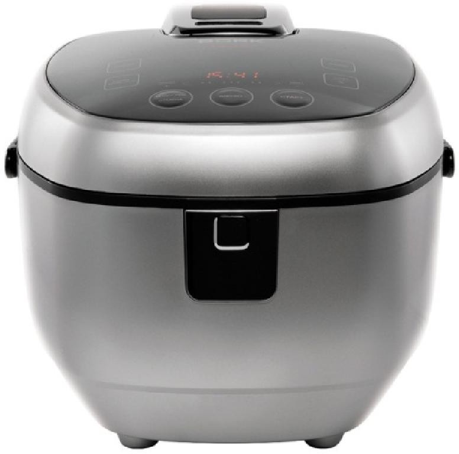
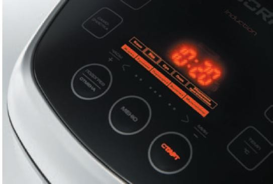
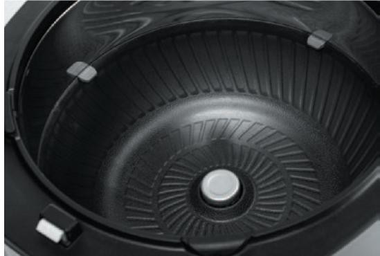
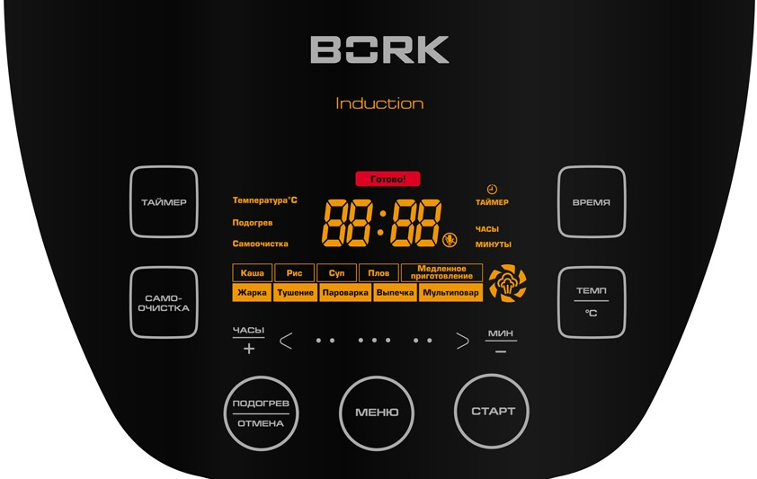

Мультиварка BORK U400
Технические характеристики
Мощность: 1250 Вт
Объем чаши: - 4 л (общий объем) / 2,4 л (полезный объем)
Микропроцессорное управление
Тактильно-сенсорное управление
Индукционный принцип нагрева
Многослойная чашаПрочное антипригарное покрытие
Режим самоочистки
Функция отложенного старта до 24 часов
Функция Замок от детей
Вес: 7,5 кгЦвет: Черный/Серебро
Страна производитель: Китай
Гарантия 1 год
Комплектация
Мерный стакан
Ложка: 2 шт.
Силиконоваяприхватка: 2 шт.
Решетка для приготовления на пару
Руководство по эксплуатации с гарантийным талоном: 1 шт.
Особенности
Пароварка, духовка, медленноварка и автоматические режимы
Мультиварка легко заменяет несколько приборов на вашей кухне и благодаря наличию автоматических режимов нажатием одной кнопки создает популярные блюда на каждый день — рис, каши, супы, плов.
Режим «Мультиповар» обеспечивает точную настройку времени приготовления и температуры нагрева, позволяя готовить неограниченное количество блюд.
Контроль выкипания
Крышка мультиварки оснащена специальным рассекателем, который регулирует уровень
давления пара в процессе закипания. Его работа ускоряет приготовление и предотвращает выкипание молочных каш, супов и компотов через клапан выпуска пара.
Индукционный нагревательный элемент
Мультиварка с индукционным нагревательным элементом с электронной точностью поддерживает выбранную вами температуру. Отсутствие фазы разогрева увеличит скорость приготовления, сохраняя полезные качества и вкусовые свойства продуктов.
Панель управления и дисплей
Установка текущего времени
Нажмите и удерживайте в течение 2 секунд кнопку ТАЙМЕР.
С помощью кнопок ЧАСЫ+/МИН – установите текущее время. Затем нажмите кнопку СТАРТ для подтверждения текущего времени.
Отключение звукового сигнала
Чтобы отменить звуковой сигнал, одновременно нажмите кнопки ПОДОГРЕВ/ОТМЕНА и СТАРТ.
Режим подогрев
По окончании процесса приготовления мультиварка автоматически переходит в режим Подогрев. Отключить режим Подогрев в процессе приготовления можно кнопкой МЕНЮ. Режим будет активен в течение 12 часов. Температура в режиме Подогрев 70 °С.
Демо-режим
В демо-режиме есть возможность показать работу рассекателя:
Подключаем мультиварку к сети
Снимаем верхнюю крышку
В режиме ожидания нажимаем и удерживаем 2 кнопки одновременно в течение 5 секунд: САМООЧИСТКА и ВРЕМЯ
Для выхода из демо-режима необходимо отключить мультиварку от сети.
Самоочистка
Для запуска режима самоочистки залейте в чашу 4 мерных стакана воды, закройте крышку. Нажмите кнопку САМООЧИСТКА. Время работы 20 мин.
Аргументы для продажи
- Индукционный нагревательный элемент
- Стальная чаша с антипригарным покрытием
- Современное сенсорно-тактильное управление
- Пароварка, духовка, медленноварка, сковородка и казан
- Автоматические режимы
- Сенсорная программы Рис
- Контроль выкипания
- Режим мультиповар с широким диапазоном регулировок
- Режим самоочистка
- Съёмная внутренняя крышка с уплотнителем
- Удобная ручка для переноски
- Отключение звукового сигнала
- Отключение режима подогрев
- Защита от включения мультиварки без чаши
- Текущее время
- Мелодичный звуковой сигнал
- Прорезиненные ножки
- Силиконовые прихватки для удобства извлечения чаши